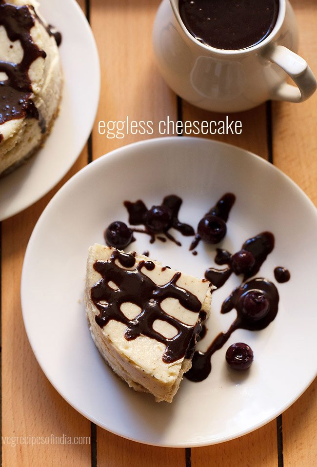

Cheesecake
Instructions
Preparing biscuit crust for cheesecake
- 1. Take 10 to 12 digestive biscuits or crackers or marie biscuits. Break them and add in a blender or grinder jar
- 2. Grind to a fine powder. take this powder in a mixing bowl.
- 3. Add 2 tablespoons melted butter in it. mix very well with a spoon.
- 4. Now place this mixture in greased spring pan. Grease the pan very well with butter.
- 5. With your fingertips or the back of a small glass or bowl, press the biscuit+butter mixture and make a neat and even layer. Keep this pan in the fridge for 20 to 30 minutes, so that the biscuit layer sets.
Making cheesecake
- 1.In another bowl, take 3 cups cream cheese (600 grams), ¾ cup sugar (150 grams), 1 tablespoon corn starch, 1 tablespoon lemon juice and 1 teaspoon vanilla extract or powder.
- 2. Now with an electric beater, start to beat this mixture.
- 3. Use a medium to medium-high speed and whip till smooth. Do not over beat.
- 4. Now add ½ cup cream.
- 5. Again beat the mixture till the cream is blended very well and you see a homogenous, creamy, thick smooth mixture. Do not over beat.
- 6. Now pour the whipped cream cheese layer in the pan. with a spatula even the top.
- 7. Keep the pans in a preheated oven and bake for 30 to 40 minutes. Preheat oven at 180 degrees celsius for 15 minutes and keep both the top and bottom heating elements on. Keep the pans in the middle rack.
- 8. To check the doneness, the sides will look firm, risen and the center of the cheesecake will be wobbly. The sides will also look separated from the pan. Let the cheesecake cool at room temperature.
- 9. Then cover with a foil or an air tight lid and place the pans in the fridge for 4 hours or more. You can also keep overnight.
For chocolate sauce
- 1. Take ½ cup hot milk in a bowl. You can heat milk in a pan or a microwave. No need to boil the milk. Just let it get hot.
- 2. Add 1 cup roughly chopped sweet chocolate (75 grams). If using semi sweet or bitter chocolate, then do add sugar as per taste.
- 3. Mix very well with a spoon or spatula till all the chocolate dissolves.
- 4. Let the chocolate sauce cool at room temperature.
Removing cheesecake from the pan
- 1. Dip a butter knife in a bowl or cup containing warm water.
- 2. Now take the butter knife and gently slid through the sides of the pan, separating the cheesecake from the pan.
- 3. Push the detachable lid from the bottom and gently remove the cheesecake. Then remove the lid from the base.
- 4. Place the cheesecake on a serving plate or tray.
- 5. Drizzle the chocolate sauce and serve. Or your family or guests can serve the chocolate sauce themselves on the sliced cheesecakes. If you want you can even add some berries like blueberries, blackberries or strawberries while serving. Dry fruits can also be sprinkled on the cheesecake.
Notes
- 1.Keep all the ingredients at room temperature, including cream cheese, vanilla extract or powder and cream.
- 2.Do not over beat the cream cheese. Doing so may result in cracked tops once the cheese cake gets baked.
- 3.Do keep a check while baking as oven temperatures vary. So it can take less or more time than what is mentioned in the recipe. Do not over bake. If you see cracks on top, then remove it from the oven.
- 4.You can skip making the chocolate sauce but I would suggest to make it.